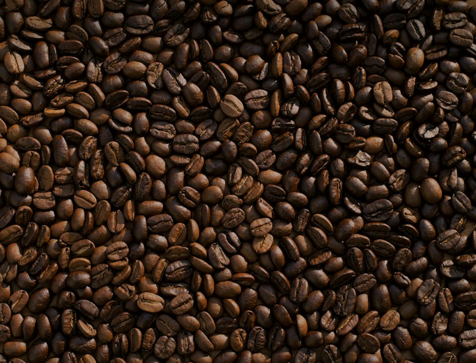

Bitácora de Cata · Equipo 5
Nuestras Reseñas de Especialidad
Bitácora editorial con las 8 reseñas escritas por nuestro equipo tras visitar 6 cafeterías reales en 4 ciudades. En cada visita registramos qué pedimos, el perfil sensorial en taza (aroma, cuerpo y acidez) y cómo se siente trabajar o conversar en el lugar.
6
Cafeterías reales visitadas
8
Reseñas en nuestra bitácora
4
Ciudades documentadas
Quentin Café
Álvaro Obregón 64, Roma Norte, Ciudad de México
"Flat White con grano de Oaxaca y microespuma sedosa"
Qué pedimos: Flat White de 6 oz con grano proceso honey de Oaxaca y un kouign-amann. Aroma: floral intenso, jazmín y miel de azahar desde que llega la taza a la mesa. Cuerpo: sedoso, con leche texturizada a temperatura exacta que no opaca el espresso. Acidez: cítrica suave muy bien integrada. La barra sobre Álvaro Obregón tiene excelente luz natural y atención rápida.
El Terrible Juan Café
Calle Colonias 440, Col. Americana, Guadalajara
"Cold Brew con notas a cacao y excelente mesa para avanzar tareas"
Qué pedimos: Cold Brew de la casa (16 horas de infusión en frío) y un chilaquiles sándwich. El Cold Brew tiene cuerpo redondo y notas francas a cacao tostado y nuez, con acidez baja, ideal para una sesión larga de estudio. Le damos 4.5 porque a mediodía se llena bastante y cuesta encontrar enchufe libre, pero el WiFi es estable y su café tostado en Guadalajara nunca falla.
Café Avellaneda
Higuera 40-A, La Concepción, Coyoacán, CDMX
"Precisión técnica en Sifón Japonés y V60 frente a La Concepción"
Qué pedimos: Lote de Chiapas extraído en Sifón Japonés y un V60 para compartir. Aroma: jazmín y bergamota muy limpios. Acidez: brillante, con recuerdo a durazno blanco que gana dulzor conforme baja la temperatura. Cuerpo: ligero y cristalino. Aunque el local es pequeño, sentarse en la banca exterior frente a la plaza de La Concepción hace que la visita valga cada minuto.
Kali Coffee Roasters
Av. José Vasconcelos 150, San Pedro Garza García, Monterrey
"Cortado doble calibrado al detalle y tueste regiomontano"
Qué pedimos: Cortado doble ristretto y pan dulce de pistache. Notas: chocolate amargo, almendra tostada y un retrogusto largo a frutos rojos. Cuerpo: denso y aterciopelado; acidez media y limpia. El local en San Pedro está muy bien climatizado, ideal para resguardarse del calor de Monterrey mientras los baristas te explican el origen del grano que están moliendo en turno.

Barra & PanChiquitito Café
Alfonso Reyes 232, Hipódromo Condesa, CDMX
"Latte con grano de Zongolica y croissant recién horneado"
Qué pedimos: Latte caliente con grano de Zongolica, Veracruz, y un croissant de almendras. El latte llega a temperatura perfecta con cuerpo medio y notas dulces a piloncillo y nuez; la acidez es suave, pensada para maridar con panadería. El espacio en Alfonso Reyes es acogedor y muy concurrido por vecinos con mascotas; ideal para una pausa matutina aunque no tanto para llevar laptop en hora pico.
Café Bola de Oro (Casa Museo)
Calle 5 de Mayo 10, Centro, Coatepec, Veracruz
"Tostado tradicional de altura en el corazón de Coatepec"
Qué pedimos: Filtrado de reserva de finca Coatepec y bolsa de 250 g en grano entero. En taza: aroma intenso a naranja confitada, caramelo y chocolate con leche; acidez cítrica de mandarina muy limpia; cuerpo medio-alto con final prolongado a panela. Ver los tostadores históricos en el centro de Coatepec y comprar grano recién tostado con molienda a medida fue de lo mejor del recorrido.
Quentin Café
Álvaro Obregón 64, Roma Norte, Ciudad de México
"V60 Geisha lavado: notas a té negro y flor de naranjo"
Qué pedimos: V60 con lote Geisha lavado en nuestra segunda visita a Quentin. Aroma: té negro y flor de naranjo. Acidez: alta y chispeante, de lima dulce. Cuerpo: ligero y sumamente limpio. Al principio salió muy caliente, pero al reposar tres minutos en la jarra se abrieron todas las notas florales. Aun con fila en sábado, el barista nos explicó la receta de vertido paso a paso.
Café Avellaneda
Higuera 40-A, La Concepción, Coyoacán, CDMX
"Aeropress Red Honey y espresso con tónica en la placita"
Qué pedimos: Aeropress con grano proceso red honey de Oaxaca y un espresso tonic. El Aeropress entrega un cuerpo redondo y jugoso con notas a frutos rojos maduros y caramelo; la acidez es media y muy amable. Es una de las barras con mayor oficio en todo el sur de la Ciudad de México.